Aan de Langestraat in Herzele nemen we de tijd voor jouw idee. We tekenen het uit op jouw maat en op de plek waar het moet komen. Pas als het klopt, gaat de machine aan.
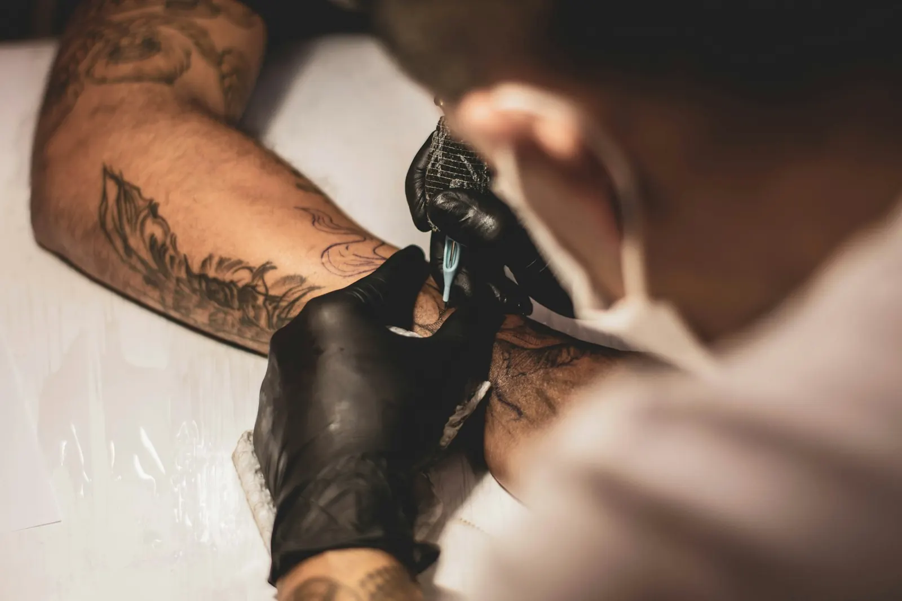
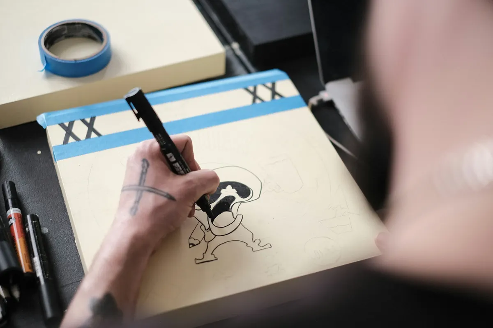
Een enkel lijntje op de pols of een stuk waar je een paar sessies voor terugkomt. Elk ontwerp wordt getekend voor de persoon die het draagt.
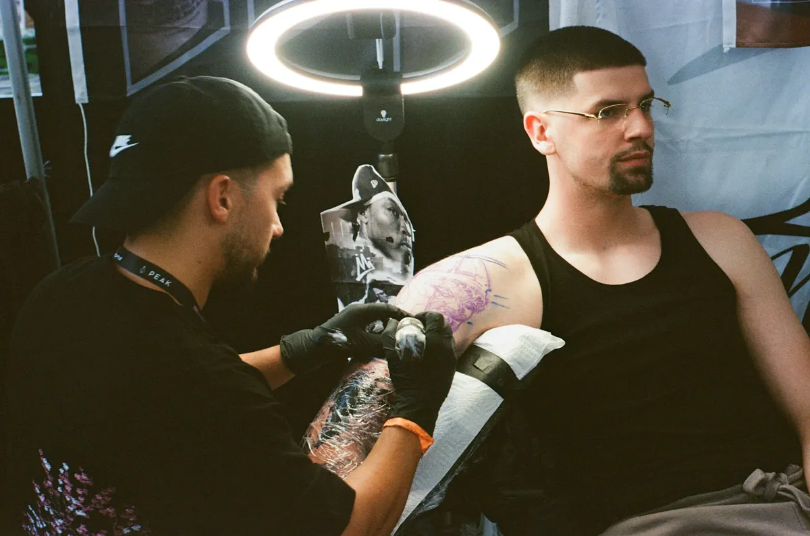
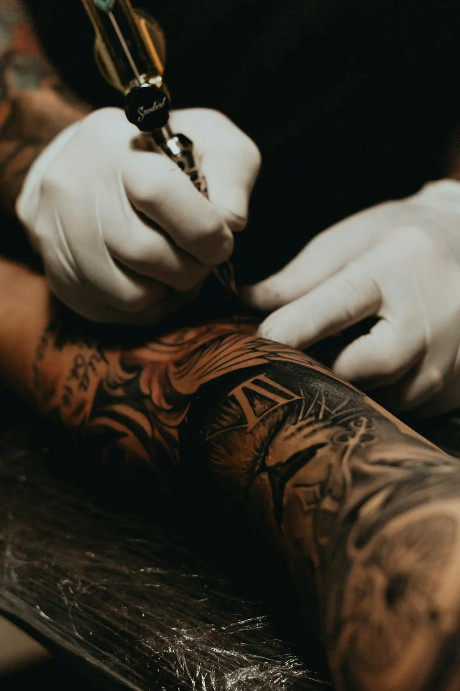
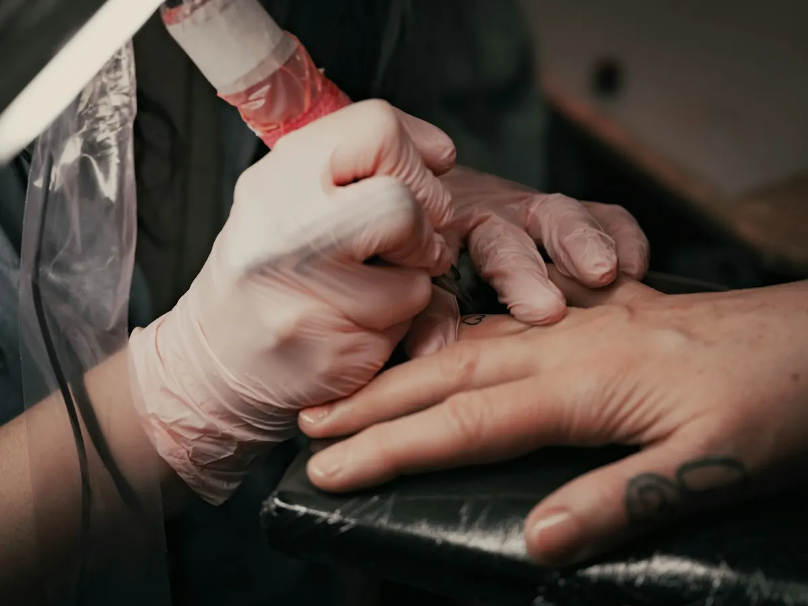
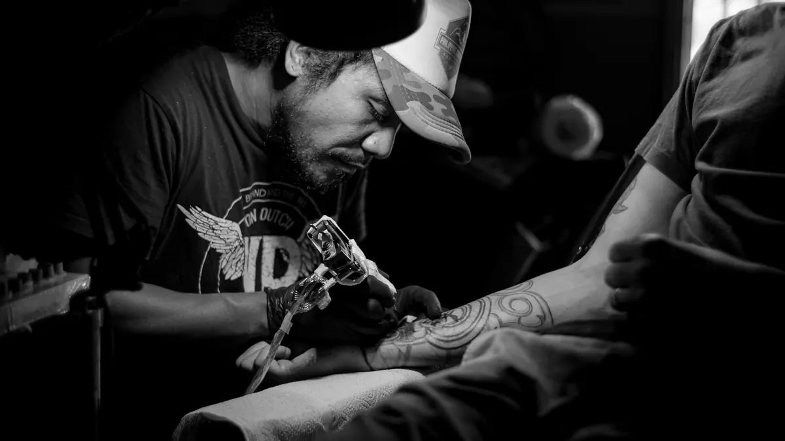
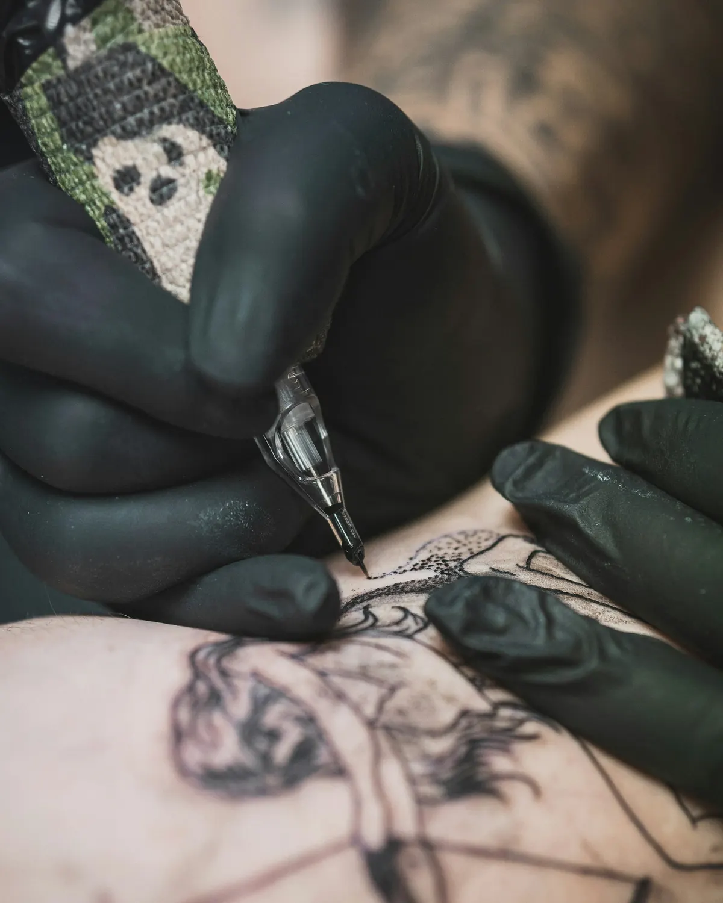
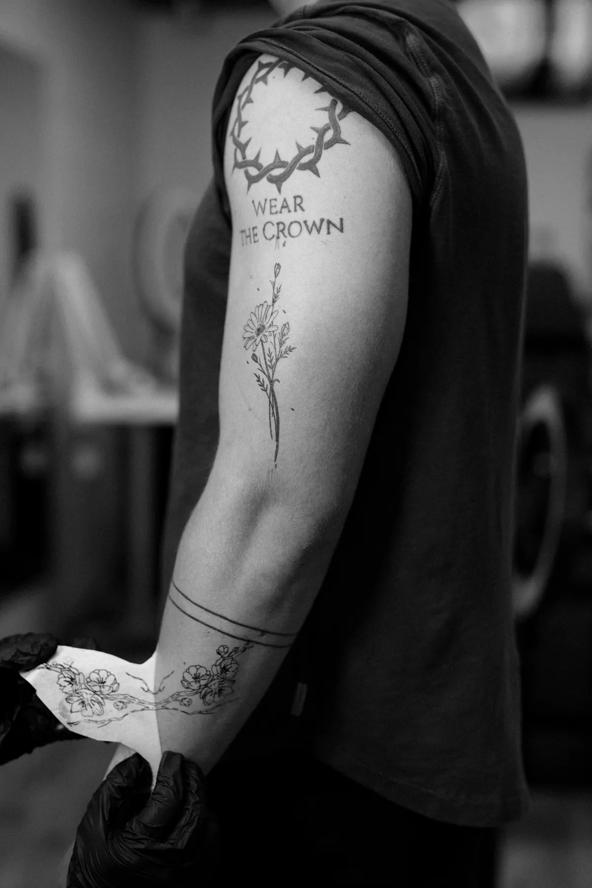
Twijfel je nog over grootte of plaats, dan zoeken we dat samen uit. Een eerste vraag stellen kost niets.
Een paar woorden, een foto of een schets. Zeg erbij waar je hem wil en hoe groot ongeveer.
Je krijgt een ontwerp op maat. Moet er iets anders, dan passen we het aan tot het goed zit.
We plaatsen het ontwerp eerst als stencil op je huid. Pas als jij tevreden bent over de plek, beginnen we.
Je gaat naar huis met uitleg over verzorgen. Vragen achteraf? Stuur gerust een bericht.
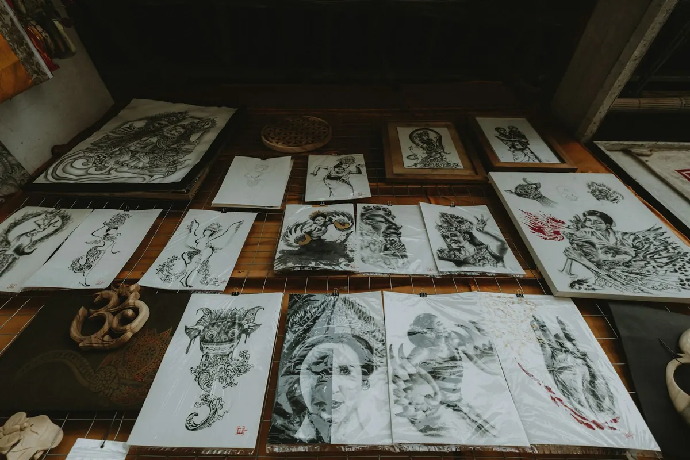
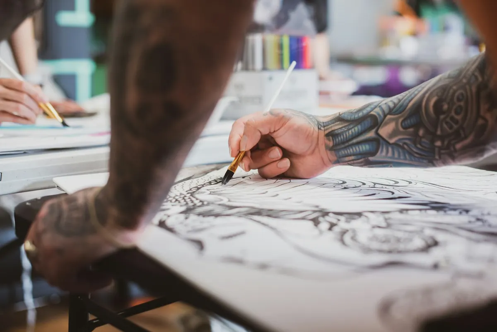
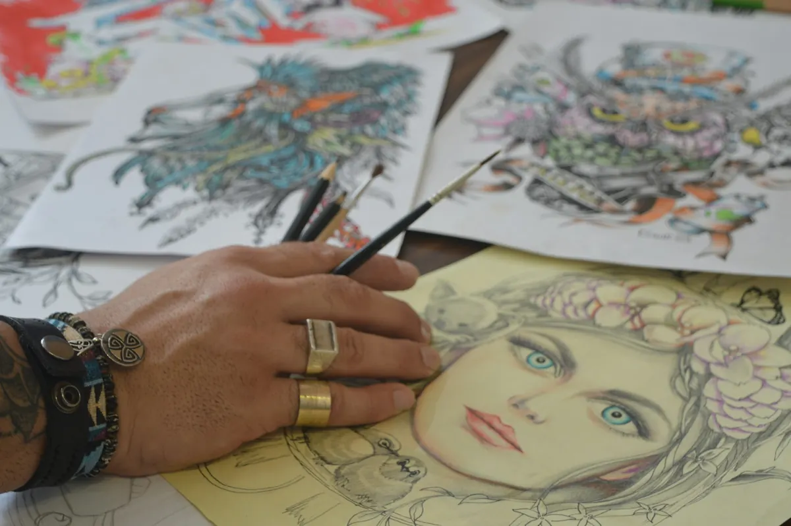
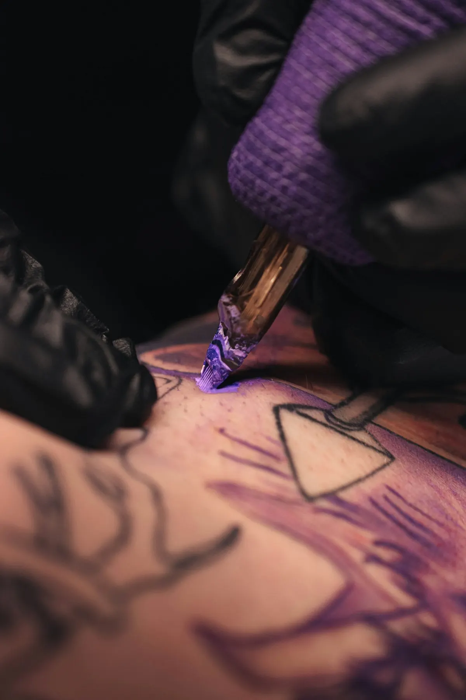
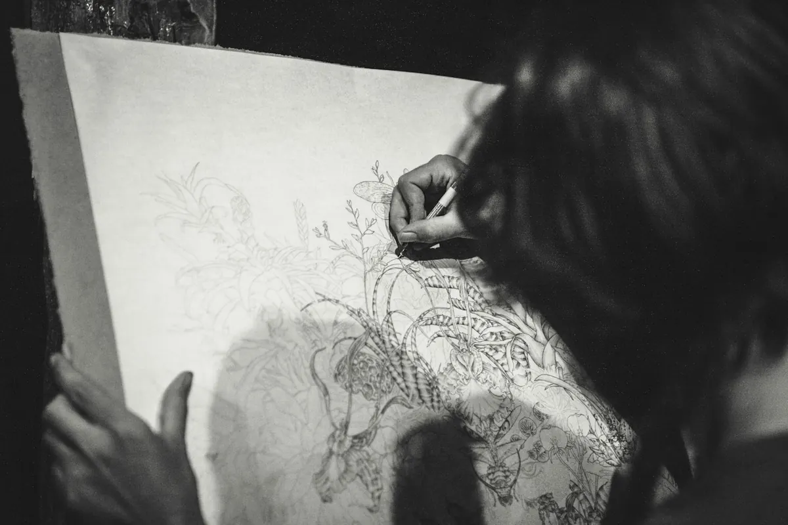
191 mensen namen de moeite om een review achter te laten, gemiddeld met vijf sterren. Dat zegt meer dan wij zelf kunnen.
Kom je voor je eerste tattoo, dan leggen we vooraf rustig uit wat je kan verwachten. Ook als je wat zenuwachtig bent.
De eerste weken bepalen hoe je tattoo er later uitziet. Dit zijn de basisregels. Bij twijfel stuur je ons gewoon een foto.
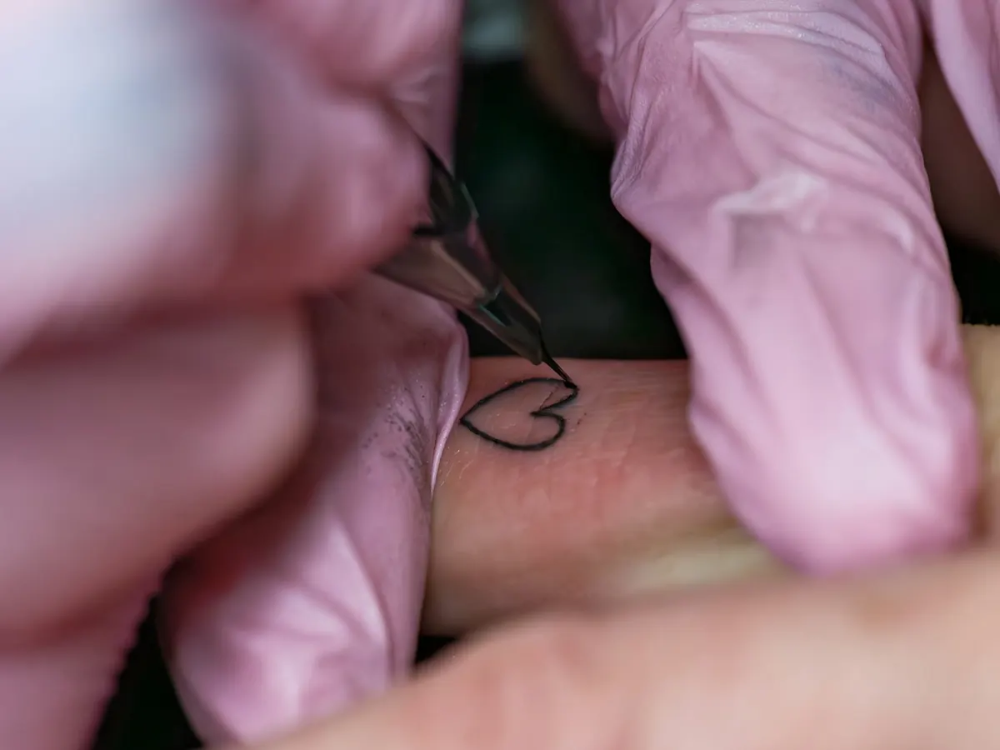
Laat de folie zitten zolang we je dat aanraden. Was daarna met lauw water en een milde, ongeparfumeerde zeep. Dep droog met keukenpapier, niet wrijven.
Smeer twee tot drie keer per dag een dun laagje verzorgende zalf. Jeuk en schilfertjes zijn normaal. Laat ze vanzelf loskomen.
Houd je tattoo uit de zon en ga niet zwemmen tot hij volledig genezen is. Daarna beschermt een zonnecrème met hoge factor de kleur het best.
Ziet iets er anders uit dan je verwacht, stuur dan een foto via WhatsApp. Liever een vraag te veel dan een tattoo die niet mooi geneest.
Wie bij ons een tattoo liet zetten, schrijft het vaak zelf op. Lees de reviews op Google en kijk wat anderen ervan vonden.
Afspraken maken we via WhatsApp of telefoon. Zo weten we op voorhand wat je wil en plannen we genoeg tijd in.
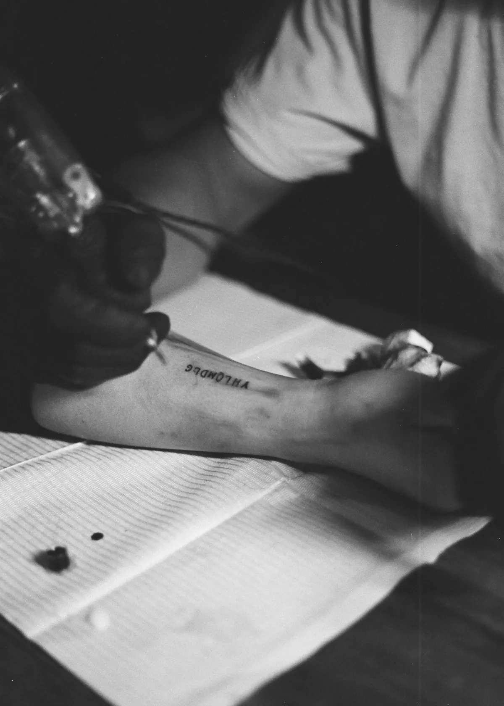
Ik maakte deze demo voor jullie om te tonen wat er kan. Na een kort gesprek maak ik er iets veel persoonlijkers van, helemaal naar jullie wens.
Vrijblijvend. Ik kom langs of we bellen.
Op maat, op jullie eigen domein.
Geen voorschot. Jullie betalen pas als alles klaar is.
Hosting, domeinnaam en kleine wijzigingen, zoals nieuwe openingsuren.
Omdat een voorbeeld meer zegt dan een mail. Zo zien jullie meteen wat er kan, en het kost jullie niets.
Nee. Het gesprek is vrijblijvend. Vinden jullie het niks, dan is het daarmee gedaan.
Na ons gesprek staat jullie site binnen 10 tot 14 dagen online.
Zeker. Jullie domeinnaam kan gewoon blijven, de nieuwe site komt in de plaats van de oude.
Nee, dat doe ik op basis van ons gesprek. Eigen foto's zijn mooi meegenomen, maar niet nodig om te starten.